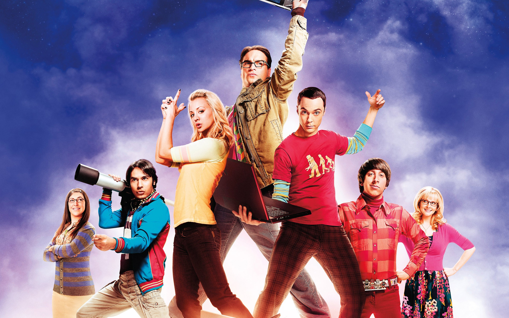
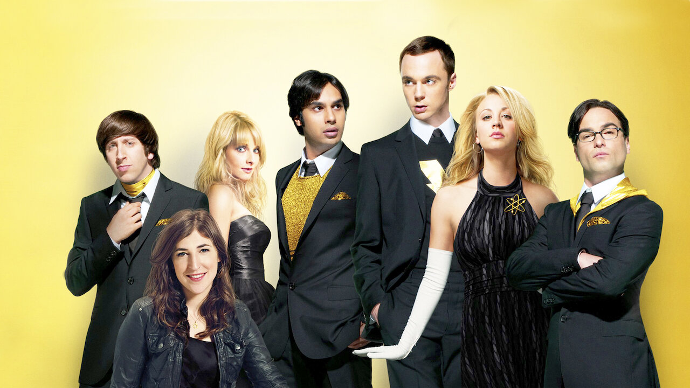
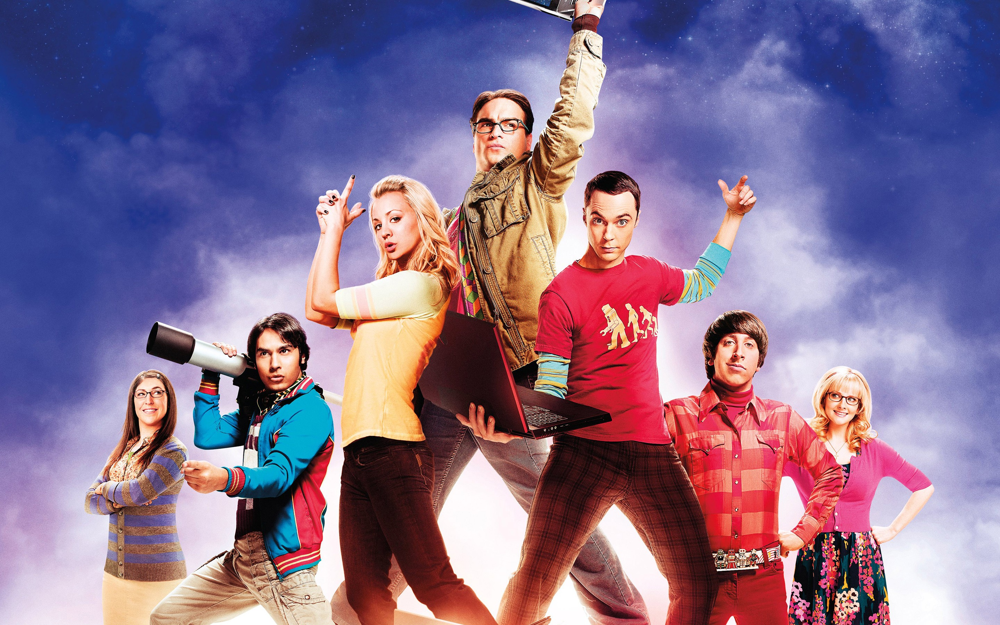
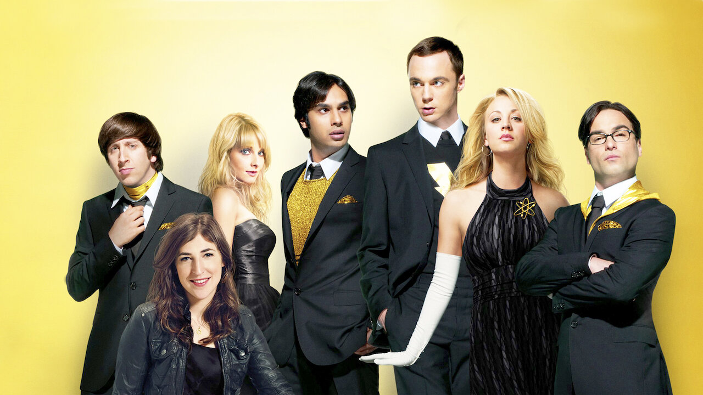
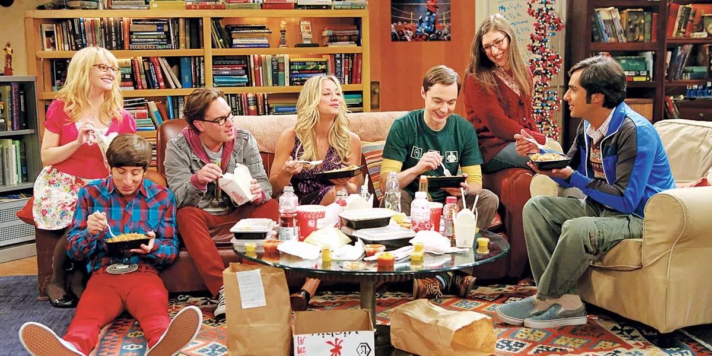
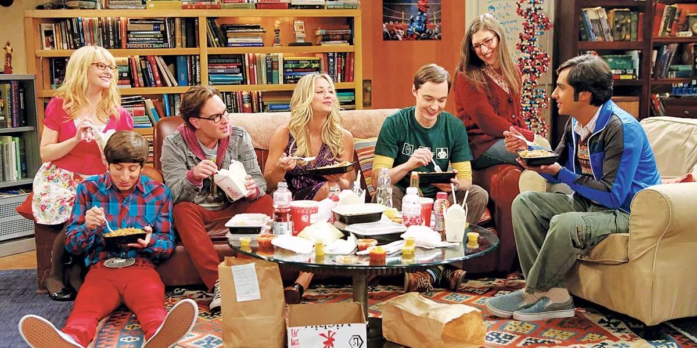

 



Leonard e Sheldon são físicos brilhantes e sabem exatamente como o universo funciona. Mas essa genialidade toda não ajuda na hora de interagir com outras pessoas, especialmente mulheres. Tudo isso começa a mudar quando Penny se muda para o prédio deles. Sheldon não vê problemas em passar as noites jogando com seus amigos geeks — Wolowitz e Koothrappali, colegas de pesquisa na universidade. Já Leonard imagina um mundo de possibilidades com Penny, inclusive o amor.